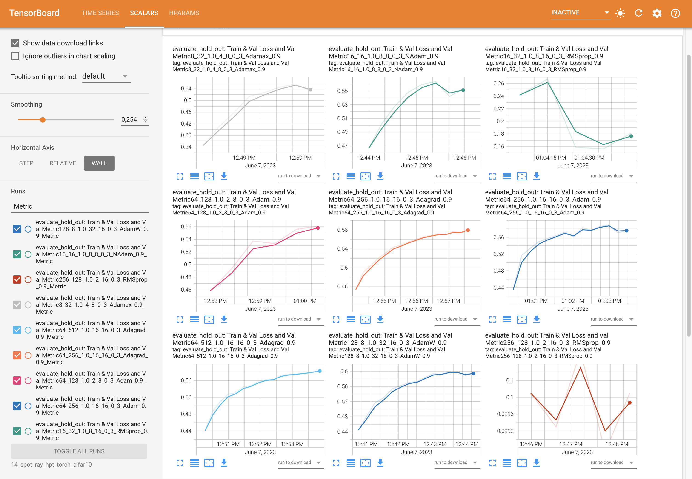

# import sys
# !{sys.executable} -m pip install --upgrade build
# !{sys.executable} -m pip install --upgrade --force-reinstall spotPython12 Hyperparameter Tuning: PyTorch wth cifar10 Data
In this tutorial, we will show how spotPython can be integrated into the PyTorch training workflow.
This document refers to the following software versions:
python: 3.10.10torch: 2.0.1torchvision: 0.15.0spotPython: 0.2.29
spotPython can be installed via pip. Alternatively, the source code can be downloaded from gitHub: https://github.com/sequential-parameter-optimization/spotPython.
!pip install spotPython- Uncomment the following lines if you want to for (re-)installation the latest version of
spotPythonfrom gitHub.
12.1 Setup
Before we consider the detailed experimental setup, we select the parameters that affect run time, initial design size and the device that is used.
MAX_TIME = 1
INIT_SIZE = 5
DEVICE = None # "cpu" # "cuda:0"from spotPython.utils.device import getDevice
DEVICE = getDevice(DEVICE)
print(DEVICE)mps24-torch_bartz09_1min_5init_2023-06-15_00-20-3812.2 Initialization of the fun_control Dictionary
spotPython uses a Python dictionary for storing the information required for the hyperparameter tuning process. This dictionary is called fun_control and is initialized with the function fun_control_init. The function fun_control_init returns a skeleton dictionary. The dictionary is filled with the required information for the hyperparameter tuning process. It stores the hyperparameter tuning settings, e.g., the deep learning network architecture that should be tuned, the classification (or regression) problem, and the data that is used for the tuning. The dictionary is used as an input for the SPOT function.
from spotPython.utils.init import fun_control_init
fun_control = fun_control_init(task="classification",
tensorboard_path="runs/12_spot_hpt_torch_cifar10",
device=DEVICE)import torch
print(torch.__version__)
# Check that MPS is available
if not torch.backends.mps.is_available():
if not torch.backends.mps.is_built():
print("MPS not available because the current PyTorch install was not "
"built with MPS enabled.")
else:
print("MPS not available because the current MacOS version is not 12.3+ "
"and/or you do not have an MPS-enabled device on this machine.")
else:
mps_device = torch.device("mps")
print("MPS device: ", mps_device)2.0.1
MPS device: mps12.3 PyTorch Data Loading
12.4 1. Load Data Cifar10 Data
from torchvision import datasets, transforms
import torchvision
def load_data(data_dir="./data"):
transform = transforms.Compose([
transforms.ToTensor(),
transforms.Normalize((0.5, 0.5, 0.5), (0.5, 0.5, 0.5))
])
trainset = torchvision.datasets.CIFAR10(
root=data_dir, train=True, download=True, transform=transform)
testset = torchvision.datasets.CIFAR10(
root=data_dir, train=False, download=True, transform=transform)
return trainset, testset
train, test = load_data()
train.data.shape, test.data.shape
n_samples = len(train)Files already downloaded and verifiedFiles already downloaded and verified- Since this works fine, we can add the data loading to the
fun_controldictionary:
# add the dataset to the fun_control
fun_control.update({"data": None, # dataset,
"train": train,
"test": test,
"n_samples": n_samples,
"target_column": None})12.5 Specification of the Preprocessing Model
After the training and test data are specified and added to the fun_control dictionary, spotPython allows the specification of a data preprocessing pipeline, e.g., for the scaling of the data or for the one-hot encoding of categorical variables. The preprocessing model is called prep_model (“preparation” or pre-processing) and includes steps that are not subject to the hyperparameter tuning process. The preprocessing model is specified in the fun_control dictionary. The preprocessing model can be implemented as a sklearn pipeline. The following code shows a typical preprocessing pipeline:
# categorical_columns = []
# one_hot_encoder = OneHotEncoder(handle_unknown="ignore", sparse_output=False)
# prep_model = ColumnTransformer(
# transformers=[
# ("categorical", one_hot_encoder, categorical_columns),
# ],
# remainder=StandardScaler(),
# )
prep_model = None
fun_control.update({"prep_model": prep_model})12.6 Select algorithm and core_model_hyper_dict
12.6.1 Implementing a Configurable Neural Network With spotPython
spotPython includes the Net_CIFAR10 class which is implemented in the file netcifar10.py. The class is imported here.
12.6.1.1 The Net_Core class
Net_lin_reg inherits from the class Net_Core which is implemented in the file netcore.py. It implements the additional attributes that are common to all neural network models. The Net_Core class is implemented in the file netcore.py. It implements hyperparameters as attributes, that are not used by the core_model, e.g.:
- optimizer (
optimizer), - learning rate (
lr), - batch size (
batch_size), - epochs (
epochs), - k_folds (
k_folds), and - early stopping criterion “patience” (
patience).
Users can add further attributes to the class. The class Net_Core is shown below.
from torch import nn
class Net_Core(nn.Module):
def __init__(self, lr_mult, batch_size, epochs, k_folds, patience,
optimizer, sgd_momentum):
super(Net_Core, self).__init__()
self.lr_mult = lr_mult
self.batch_size = batch_size
self.epochs = epochs
self.k_folds = k_folds
self.patience = patience
self.optimizer = optimizer
self.sgd_momentum = sgd_momentum:::{.callout-note}
We see that the class Net_lin_reg has additional attributes and does not inherit from nn directly. It adds an additional class, Net_core, that takes care of additional attributes that are common to all neural network models, e.g., the learning rate multiplier lr_mult or the batch size batch_size.
from spotPython.torch.netcifar10 import Net_CIFAR10
from spotPython.data.torch_hyper_dict import TorchHyperDict
from spotPython.hyperparameters.values import add_core_model_to_fun_control
core_model = Net_CIFAR10
fun_control = add_core_model_to_fun_control(core_model=core_model,
fun_control=fun_control,
hyper_dict=TorchHyperDict,
filename=None)12.7 The Search Space
12.7.1 Configuring the Search Space With spotPython
12.7.1.1 The hyper_dict Hyperparameters for the Selected Algorithm
spotPython uses JSON files for the specification of the hyperparameters. The JSON file for the core_model is called torch_hyper_dict.json. The corresponding entries for the Net_CIFAR10 class are shown below.
spotPython can handle numerical, boolean, and categorical hyperparameters. They can be specified in the JSON file in a similar way as the numerical hyperparameters as shown below. Each entry in the JSON file represents one hyperparameter with the following structure: type, default, transform, lower, and upper.
"factor_hyperparameter": {
"levels": ["A", "B", "C"],
"type": "factor",
"default": "B",
"transform": "None",
"core_model_parameter_type": "str",
"lower": 0,
"upper": 2},The corresponding entries for the Net_CIFAR10 class are shown below.
"Net_CIFAR10":
{
"l1": {
"type": "int",
"default": 5,
"transform": "transform_power_2_int",
"lower": 2,
"upper": 9},
"l2": {
"type": "int",
"default": 5,
"transform": "transform_power_2_int",
"lower": 2,
"upper": 9},
"lr_mult": {
"type": "float",
"default": 1.0,
"transform": "None",
"lower": 0.1,
"upper": 10.0},
"batch_size": {
"type": "int",
"default": 4,
"transform": "transform_power_2_int",
"lower": 1,
"upper": 4},
"epochs": {
"type": "int",
"default": 3,
"transform": "transform_power_2_int",
"lower": 3,
"upper": 4},
"k_folds": {
"type": "int",
"default": 1,
"transform": "None",
"lower": 1,
"upper": 1},
"patience": {
"type": "int",
"default": 5,
"transform": "None",
"lower": 2,
"upper": 10
},
"optimizer": {
"levels": ["Adadelta", "Adagrad", "Adam", "AdamW", "SparseAdam", "Adamax", "ASGD", "NAdam", "RAdam", "RMSprop", "Rprop", "SGD"],
"type": "factor",
"default": "SGD",
"transform": "None",
"class_name": "torch.optim",
"core_model_parameter_type": "str",
"lower": 0,
"upper": 12},
"sgd_momentum": {
"type": "float",
"default": 0.0,
"transform": "None",
"lower": 0.0,
"upper": 1.0}
},12.8 Modifying the Hyperparameters
spotPython provides functions for modifying the hyperparameters, their bounds and factors as well as for activating and de-activating hyperparameters without re-compilation of the Python source code. These functions are described in the following.
12.8.1 Modify hyper_dict Hyperparameters for the Selected Algorithm aka core_model
After specifying the model, the corresponding hyperparameters, their types and bounds are loaded from the JSON file torch_hyper_dict.json. After loading, the user can modify the hyperparameters, e.g., the bounds. spotPython provides a simple rule for de-activating hyperparameters: If the lower and the upper bound are set to identical values, the hyperparameter is de-activated. This is useful for the hyperparameter tuning, because it allows to specify a hyperparameter in the JSON file, but to de-activate it in the fun_control dictionary. This is done in the next step.
12.8.2 Modify Hyperparameters of Type numeric and integer (boolean)
12.9 4. Modify hyper_dict Hyperparameters for the Selected Algorithm aka core_model
After specifying the model, the corresponding hyperparameters, their types and bounds are loaded from the JSON file torch_hyper_dict.json. After loading, the user can modify the hyperparameters, e.g., the bounds. spotPython provides a clever rule for de-activating hyperparameters. If the lower and the upper bound are set to identical values, the hyperparameter is de-activated. This is useful for the hyperparameter tuning, because it allows to specify a hyperparameter in the JSON file, but to de-activate it in the fun_control dictionary. This is done in the next step.
12.9.1 Modify hyperparameter of type numeric and integer (boolean)
The hyperparameter k_folds is not used, it is de-activated here by setting the lower and upper bound to the same value.
from spotPython.hyperparameters.values import modify_hyper_parameter_bounds
# fun_control = modify_hyper_parameter_bounds(fun_control, "delta", bounds=[1e-10, 1e-6])
# fun_control = modify_hyper_parameter_bounds(fun_control, "min_samples_split", bounds=[3, 20])
#fun_control = modify_hyper_parameter_bounds(fun_control, "merit_preprune", bounds=[0, 0])
# fun_control["core_model_hyper_dict"]
fun_control = modify_hyper_parameter_bounds(fun_control, "k_folds", bounds=[2, 2])12.9.2 Modify hyperparameter of type factor
In a similar manner as for the numerical hyperparameters, the categorical hyperparameters can be modified. For example, the hyperparameter leaf_model is de-activated here by choosing only one value "LinearRegression".
from spotPython.hyperparameters.values import modify_hyper_parameter_levels
fun_control = modify_hyper_parameter_levels(fun_control, "optimizer", ["Adam"])
# fun_control = modify_hyper_parameter_levels(fun_control, "leaf_model", ["LinearRegression"])
# fun_control["core_model_hyper_dict"]12.9.3 Optimizers
Optimizers can be selected as described in Section 14.7.4.
A note on the learning rate
spotPython provides a multiplier for the default learning rates, lr_mult, because optimizers use different learning rates. Using a multiplier for the learning rates might enable a simultaneous tuning of the learning rates for all optimizers. However, this is not recommended, because the learning rates are not comparable across optimizers. Therefore, we recommend fixing the learning rate for all optimizers if multiple optimizers are used. This can be done by setting the lower and upper bounds of the learning rate multiplier to the same value as shown below.
Thus, the learning rate, which affects the SGD optimizer, will be set to a fixed value. We choose the default value of 1e-3 for the learning rate, because it is used in other PyTorch examples (it is also the default value used by spotPython as defined in the optimizer_handler() method). We recommend tuning the learning rate later, when a reduced set of optimizers is fixed. Here, we will demonstrate how to select in a screening phase the optimizers that should be used for the hyperparameter tuning.
For the same reason, we will fix the sgd_momentum to 0.9.
fun_control = modify_hyper_parameter_bounds(fun_control,
"lr_mult", bounds=[1e-3, 1e-3])
fun_control = modify_hyper_parameter_bounds(fun_control,
"sgd_momentum", bounds=[0.9, 0.9])12.10 Evaluation
The evaluation procedure requires the specification of two elements:
- the way how the data is split into a train and a test set and
- the loss function (and a metric).
These are described in Section 14.8.
The loss function is specified by the key "loss_function". We will use CrossEntropy loss for the multiclass-classification task.
from torch.nn import CrossEntropyLoss
loss_function = CrossEntropyLoss()
fun_control.update({"loss_function": loss_function})In addition to the loss functions, spotPython provides access to a large number of metrics.
- The key
"metric_sklearn"is used for metrics that follow thescikit-learnconventions. - The key
"river_metric"is used for the river based evaluation (Montiel et al. 2021) viaeval_oml_iter_progressive, and - the key
"metric_torch"is used for the metrics fromTorchMetrics.
TorchMetrics is a collection of more than 90 PyTorch metrics1.
A description can be found in Section 14.8.2.
import torchmetrics
metric_torch = torchmetrics.Accuracy(task="multiclass", num_classes=10).to(fun_control["device"])
fun_control.update({"metric_torch": metric_torch})12.11 Calling the SPOT Function
Now, the dictionary fun_control contains all information needed for the hyperparameter tuning. Before the hyperparameter tuning is started, it is recommended to take a look at the experimental design. The method gen_design_table generates a design table as follows:
from spotPython.utils.eda import gen_design_table
print(gen_design_table(fun_control))| name | type | default | lower | upper | transform |
|--------------|--------|-----------|---------|---------|-----------------------|
| l1 | int | 5 | 2 | 9 | transform_power_2_int |
| l2 | int | 5 | 2 | 9 | transform_power_2_int |
| lr_mult | float | 1.0 | 0.001 | 0.001 | None |
| batch_size | int | 4 | 1 | 4 | transform_power_2_int |
| epochs | int | 3 | 3 | 4 | transform_power_2_int |
| k_folds | int | 1 | 2 | 2 | None |
| patience | int | 5 | 2 | 10 | None |
| optimizer | factor | SGD | 0 | 0 | None |
| sgd_momentum | float | 0.0 | 0.9 | 0.9 | None |This allows to check if all information is available and if the information is correct.
The objective function fun_torch is selected next. It implements an interface from PyTorch’s training, validation, and testing methods to spotPython.
from spotPython.fun.hypertorch import HyperTorch
fun = HyperTorch().fun_torchThe spotPython hyperparameter tuning is started by calling the Spot function. Here, we will run the tuner for approximately 30 minutes (max_time). Note: the initial design is always evaluated in the spotPython run. As a consequence, the run may take longer than specified by max_time, because the evaluation time of initial design (here: init_size, 10 points) is performed independently of max_time.
import numpy as np
from spotPython.spot import spot
from math import inf
spot_tuner = spot.Spot(fun=fun,
lower = lower,
upper = upper,
fun_evals = inf,
fun_repeats = 1,
max_time = MAX_TIME,
noise = False,
tolerance_x = np.sqrt(np.spacing(1)),
var_type = var_type,
var_name = var_name,
infill_criterion = "y",
n_points = 1,
seed=123,
log_level = 50,
show_models= False,
show_progress= True,
fun_control = fun_control,
design_control={"init_size": INIT_SIZE,
"repeats": 1},
surrogate_control={"noise": True,
"cod_type": "norm",
"min_theta": -4,
"max_theta": 3,
"n_theta": len(var_name),
"model_fun_evals": 10_000,
"log_level": 50
})
spot_tuner.run(X_start=X_start)
config: {'l1': 128, 'l2': 8, 'lr_mult': 0.001, 'batch_size': 16, 'epochs': 16, 'k_folds': 2, 'patience': 5, 'optimizer': 'Adam', 'sgd_momentum': 0.9}
Epoch: 1Loss on hold-out set: 2.3142356275558473
Accuracy on hold-out set: 0.09975
MulticlassAccuracy value on hold-out data: 0.09974999725818634
Epoch: 2Loss on hold-out set: 2.3131948938369753
Accuracy on hold-out set: 0.09975
MulticlassAccuracy value on hold-out data: 0.09974999725818634
Epoch: 3Loss on hold-out set: 2.3122001722335814
Accuracy on hold-out set: 0.09975
MulticlassAccuracy value on hold-out data: 0.09974999725818634
Epoch: 4Loss on hold-out set: 2.3113376068115232
Accuracy on hold-out set: 0.09975
MulticlassAccuracy value on hold-out data: 0.09974999725818634
Epoch: 5Loss on hold-out set: 2.310332297325134
Accuracy on hold-out set: 0.09975
MulticlassAccuracy value on hold-out data: 0.09974999725818634
Epoch: 6Loss on hold-out set: 2.3091301836013796
Accuracy on hold-out set: 0.09975
MulticlassAccuracy value on hold-out data: 0.09974999725818634
Epoch: 7Loss on hold-out set: 2.3076420265197752
Accuracy on hold-out set: 0.09975
MulticlassAccuracy value on hold-out data: 0.09974999725818634
Epoch: 8Loss on hold-out set: 2.305810295295715
Accuracy on hold-out set: 0.09975
MulticlassAccuracy value on hold-out data: 0.09974999725818634
Epoch: 9Loss on hold-out set: 2.303575220108032
Accuracy on hold-out set: 0.09975
MulticlassAccuracy value on hold-out data: 0.09974999725818634
Epoch: 10Loss on hold-out set: 2.300930771827698
Accuracy on hold-out set: 0.09975
MulticlassAccuracy value on hold-out data: 0.09974999725818634
Epoch: 11Loss on hold-out set: 2.297853945159912
Accuracy on hold-out set: 0.0998
MulticlassAccuracy value on hold-out data: 0.0997999981045723
Epoch: 12Loss on hold-out set: 2.2943308353424072
Accuracy on hold-out set: 0.101
MulticlassAccuracy value on hold-out data: 0.10100000351667404
Epoch: 13Loss on hold-out set: 2.2903799419403077
Accuracy on hold-out set: 0.10565
MulticlassAccuracy value on hold-out data: 0.10565000027418137
Epoch: 14Loss on hold-out set: 2.286016369628906
Accuracy on hold-out set: 0.1126
MulticlassAccuracy value on hold-out data: 0.11259999871253967
Epoch: 15Loss on hold-out set: 2.281289504623413
Accuracy on hold-out set: 0.1208
MulticlassAccuracy value on hold-out data: 0.12080000340938568
Epoch: 16Loss on hold-out set: 2.276259234237671
Accuracy on hold-out set: 0.12715
MulticlassAccuracy value on hold-out data: 0.12714999914169312
Returned to Spot: Validation loss: 2.276259234237671
----------------------------------------------
config: {'l1': 16, 'l2': 16, 'lr_mult': 0.001, 'batch_size': 8, 'epochs': 8, 'k_folds': 2, 'patience': 7, 'optimizer': 'Adam', 'sgd_momentum': 0.9}
Epoch: 1Loss on hold-out set: 2.3212450092315673
Accuracy on hold-out set: 0.1008
MulticlassAccuracy value on hold-out data: 0.10080000013113022
Epoch: 2Loss on hold-out set: 2.3175892451286315
Accuracy on hold-out set: 0.1008
MulticlassAccuracy value on hold-out data: 0.10080000013113022
Epoch: 3Loss on hold-out set: 2.313878079414368
Accuracy on hold-out set: 0.1008
MulticlassAccuracy value on hold-out data: 0.10080000013113022
Epoch: 4Loss on hold-out set: 2.3105178533554076
Accuracy on hold-out set: 0.1008
MulticlassAccuracy value on hold-out data: 0.10080000013113022
Epoch: 5Loss on hold-out set: 2.3070853699684144
Accuracy on hold-out set: 0.1038
MulticlassAccuracy value on hold-out data: 0.10379999876022339
Epoch: 6Loss on hold-out set: 2.3033511624336245
Accuracy on hold-out set: 0.117
MulticlassAccuracy value on hold-out data: 0.11699999868869781
Epoch: 7Loss on hold-out set: 2.2987976725578307
Accuracy on hold-out set: 0.12915
MulticlassAccuracy value on hold-out data: 0.12915000319480896
Epoch: 8Loss on hold-out set: 2.2936014513015746
Accuracy on hold-out set: 0.13345
MulticlassAccuracy value on hold-out data: 0.1334500014781952
Returned to Spot: Validation loss: 2.2936014513015746
----------------------------------------------
config: {'l1': 256, 'l2': 128, 'lr_mult': 0.001, 'batch_size': 2, 'epochs': 16, 'k_folds': 2, 'patience': 9, 'optimizer': 'Adam', 'sgd_momentum': 0.9}
Epoch: 1Loss on hold-out set: 2.2917327533245087
Accuracy on hold-out set: 0.12725
MulticlassAccuracy value on hold-out data: 0.12725000083446503
Epoch: 2Loss on hold-out set: 2.2612567551374436
Accuracy on hold-out set: 0.18715
MulticlassAccuracy value on hold-out data: 0.1871500015258789
Epoch: 3Loss on hold-out set: 2.2061368394374847
Accuracy on hold-out set: 0.1945
MulticlassAccuracy value on hold-out data: 0.19449999928474426
Epoch: 4Loss on hold-out set: 2.1470815731167794
Accuracy on hold-out set: 0.22175
MulticlassAccuracy value on hold-out data: 0.22175000607967377
Epoch: 5Loss on hold-out set: 2.096602593433857
Accuracy on hold-out set: 0.2555
MulticlassAccuracy value on hold-out data: 0.2554999887943268
Epoch: 6Loss on hold-out set: 2.053043792015314
Accuracy on hold-out set: 0.2685
MulticlassAccuracy value on hold-out data: 0.2685000002384186
Epoch: 7Loss on hold-out set: 2.014997237855196
Accuracy on hold-out set: 0.2788
MulticlassAccuracy value on hold-out data: 0.27880001068115234
Epoch: 8Loss on hold-out set: 1.981966679698229
Accuracy on hold-out set: 0.28885
MulticlassAccuracy value on hold-out data: 0.28885000944137573
Epoch: 9Loss on hold-out set: 1.9541859735846518
Accuracy on hold-out set: 0.29675
MulticlassAccuracy value on hold-out data: 0.296750009059906
Epoch: 10Loss on hold-out set: 1.9317885659515859
Accuracy on hold-out set: 0.30255
MulticlassAccuracy value on hold-out data: 0.30254998803138733
Epoch: 11Loss on hold-out set: 1.9136856927335262
Accuracy on hold-out set: 0.30895
MulticlassAccuracy value on hold-out data: 0.3089500069618225
Epoch: 12Loss on hold-out set: 1.8987651331067086
Accuracy on hold-out set: 0.31445
MulticlassAccuracy value on hold-out data: 0.3144499957561493
Epoch: 13Loss on hold-out set: 1.8860693186610937
Accuracy on hold-out set: 0.31915
MulticlassAccuracy value on hold-out data: 0.31915000081062317
Epoch: 14Loss on hold-out set: 1.874677218285203
Accuracy on hold-out set: 0.3238
MulticlassAccuracy value on hold-out data: 0.3237999975681305
Epoch: 15Loss on hold-out set: 1.8641018875926734
Accuracy on hold-out set: 0.32835
MulticlassAccuracy value on hold-out data: 0.3283500075340271
Epoch: 16Loss on hold-out set: 1.8541052027463913
Accuracy on hold-out set: 0.3317
MulticlassAccuracy value on hold-out data: 0.33169999718666077
Returned to Spot: Validation loss: 1.8541052027463913
----------------------------------------------
config: {'l1': 8, 'l2': 32, 'lr_mult': 0.001, 'batch_size': 4, 'epochs': 8, 'k_folds': 2, 'patience': 6, 'optimizer': 'Adam', 'sgd_momentum': 0.9}
Epoch: 1Loss on hold-out set: 2.3049700310230254
Accuracy on hold-out set: 0.1006
MulticlassAccuracy value on hold-out data: 0.1005999967455864
Epoch: 2Loss on hold-out set: 2.3044945236206056
Accuracy on hold-out set: 0.10175
MulticlassAccuracy value on hold-out data: 0.10175000131130219
Epoch: 3Loss on hold-out set: 2.304011713886261
Accuracy on hold-out set: 0.1059
MulticlassAccuracy value on hold-out data: 0.10589999705553055
Epoch: 4Loss on hold-out set: 2.3034459031581878
Accuracy on hold-out set: 0.11195
MulticlassAccuracy value on hold-out data: 0.11195000261068344
Epoch: 5Loss on hold-out set: 2.3027652218818666
Accuracy on hold-out set: 0.1197
MulticlassAccuracy value on hold-out data: 0.11969999969005585
Epoch: 6Loss on hold-out set: 2.3019251953125
Accuracy on hold-out set: 0.12525
MulticlassAccuracy value on hold-out data: 0.12524999678134918
Epoch: 7Loss on hold-out set: 2.3008276158332825
Accuracy on hold-out set: 0.12885
MulticlassAccuracy value on hold-out data: 0.12884999811649323
Epoch: 8Loss on hold-out set: 2.299410948419571
Accuracy on hold-out set: 0.13165
MulticlassAccuracy value on hold-out data: 0.13165000081062317
Returned to Spot: Validation loss: 2.299410948419571
----------------------------------------------
config: {'l1': 64, 'l2': 512, 'lr_mult': 0.001, 'batch_size': 8, 'epochs': 16, 'k_folds': 2, 'patience': 3, 'optimizer': 'Adam', 'sgd_momentum': 0.9}
Epoch: 1Loss on hold-out set: 2.3010306661605835
Accuracy on hold-out set: 0.12385
MulticlassAccuracy value on hold-out data: 0.12385000288486481
Epoch: 2Loss on hold-out set: 2.2981597155570985
Accuracy on hold-out set: 0.14165
MulticlassAccuracy value on hold-out data: 0.1416500061750412
Epoch: 3Loss on hold-out set: 2.2937135018348696
Accuracy on hold-out set: 0.15225
MulticlassAccuracy value on hold-out data: 0.1522500067949295
Epoch: 4Loss on hold-out set: 2.286209341335297
Accuracy on hold-out set: 0.1602
MulticlassAccuracy value on hold-out data: 0.16019999980926514
Epoch: 5Loss on hold-out set: 2.273649608898163
Accuracy on hold-out set: 0.19665
MulticlassAccuracy value on hold-out data: 0.19664999842643738
Epoch: 6Loss on hold-out set: 2.2553646927833557
Accuracy on hold-out set: 0.21655
MulticlassAccuracy value on hold-out data: 0.21654999256134033
Epoch: 7Loss on hold-out set: 2.232011631679535
Accuracy on hold-out set: 0.2261
MulticlassAccuracy value on hold-out data: 0.22609999775886536
Epoch: 8Loss on hold-out set: 2.204334761047363
Accuracy on hold-out set: 0.23205
MulticlassAccuracy value on hold-out data: 0.23205000162124634
Epoch: 9Loss on hold-out set: 2.1739803652763365
Accuracy on hold-out set: 0.23815
MulticlassAccuracy value on hold-out data: 0.2381500005722046
Epoch: 10Loss on hold-out set: 2.1442159241199494
Accuracy on hold-out set: 0.24275
MulticlassAccuracy value on hold-out data: 0.24275000393390656
Epoch: 11Loss on hold-out set: 2.1182879725933077
Accuracy on hold-out set: 0.248
MulticlassAccuracy value on hold-out data: 0.24799999594688416
Epoch: 12Loss on hold-out set: 2.097240575218201
Accuracy on hold-out set: 0.25325
MulticlassAccuracy value on hold-out data: 0.25325000286102295
Epoch: 13Loss on hold-out set: 2.080285821247101
Accuracy on hold-out set: 0.26005
MulticlassAccuracy value on hold-out data: 0.2600499987602234
Epoch: 14Loss on hold-out set: 2.066159715461731
Accuracy on hold-out set: 0.2663
MulticlassAccuracy value on hold-out data: 0.2662999927997589
Epoch: 15Loss on hold-out set: 2.053798400592804
Accuracy on hold-out set: 0.2702
MulticlassAccuracy value on hold-out data: 0.2702000141143799
Epoch: 16Loss on hold-out set: 2.042636300230026
Accuracy on hold-out set: 0.27395
MulticlassAccuracy value on hold-out data: 0.2739500105381012
Returned to Spot: Validation loss: 2.042636300230026
----------------------------------------------
config: {'l1': 512, 'l2': 256, 'lr_mult': 0.001, 'batch_size': 2, 'epochs': 16, 'k_folds': 2, 'patience': 10, 'optimizer': 'Adam', 'sgd_momentum': 0.9}
Epoch: 1Loss on hold-out set: 2.2756777888298036
Accuracy on hold-out set: 0.19145
MulticlassAccuracy value on hold-out data: 0.19144999980926514
Epoch: 2Loss on hold-out set: 2.2095968044400216
Accuracy on hold-out set: 0.24035
MulticlassAccuracy value on hold-out data: 0.24034999310970306
Epoch: 3Loss on hold-out set: 2.1328695333838463
Accuracy on hold-out set: 0.25295
MulticlassAccuracy value on hold-out data: 0.2529500126838684
Epoch: 4Loss on hold-out set: 2.078280544412136
Accuracy on hold-out set: 0.264
MulticlassAccuracy value on hold-out data: 0.2639999985694885
Epoch: 5Loss on hold-out set: 2.0374396889925004
Accuracy on hold-out set: 0.2737
MulticlassAccuracy value on hold-out data: 0.2736999988555908
Epoch: 6Loss on hold-out set: 2.003498708432913
Accuracy on hold-out set: 0.2836
MulticlassAccuracy value on hold-out data: 0.28360000252723694
Epoch: 7Loss on hold-out set: 1.9760794464290141
Accuracy on hold-out set: 0.2911
MulticlassAccuracy value on hold-out data: 0.29109999537467957
Epoch: 8Loss on hold-out set: 1.9541714536309243
Accuracy on hold-out set: 0.2983
MulticlassAccuracy value on hold-out data: 0.29829999804496765
Epoch: 9Loss on hold-out set: 1.9362848136663438
Accuracy on hold-out set: 0.3049
MulticlassAccuracy value on hold-out data: 0.30489999055862427
Epoch: 10Loss on hold-out set: 1.9211854695260524
Accuracy on hold-out set: 0.3105
MulticlassAccuracy value on hold-out data: 0.31049999594688416
Epoch: 11Loss on hold-out set: 1.907843160805106
Accuracy on hold-out set: 0.3155
MulticlassAccuracy value on hold-out data: 0.3154999911785126
Epoch: 12Loss on hold-out set: 1.8957028525948525
Accuracy on hold-out set: 0.32075
MulticlassAccuracy value on hold-out data: 0.32074999809265137
Epoch: 13Loss on hold-out set: 1.8844266456991434
Accuracy on hold-out set: 0.3261
MulticlassAccuracy value on hold-out data: 0.3260999917984009
Epoch: 14Loss on hold-out set: 1.8738533942848443
Accuracy on hold-out set: 0.33005
MulticlassAccuracy value on hold-out data: 0.330049991607666
Epoch: 15Loss on hold-out set: 1.8637814008712767
Accuracy on hold-out set: 0.3327
MulticlassAccuracy value on hold-out data: 0.3327000141143799
Epoch: 16Loss on hold-out set: 1.8541804857194424
Accuracy on hold-out set: 0.3363
MulticlassAccuracy value on hold-out data: 0.33629998564720154
Returned to Spot: Validation loss: 1.8541804857194424
----------------------------------------------spotPython tuning: 1.8541052027463913 [##########] 100.00% Done...
<spotPython.spot.spot.Spot at 0x2c33830a0>13 Tensorboard
The textual output shown in the console (or code cell) can be visualized with Tensorboard.
13.1 Tensorboard: Start Tensorboard
Start TensorBoard through the command line to visualize data you logged. Specify the root log directory as used in fun_control = fun_control_init(task="regression", tensorboard_path="runs/24_spot_torch_regression") as the tensorboard_path. The argument logdir points to directory where TensorBoard will look to find event files that it can display. TensorBoard will recursively walk the directory structure rooted at logdir, looking for .tfevents. files.
tensorboard --logdir=runsGo to the URL it provides or to http://localhost:6006/. The following figures show some screenshots of Tensorboard.


13.1.1 Results
SAVE = False
LOAD = False
if SAVE:
result_file_name = "res_" + experiment_name + ".pkl"
with open(result_file_name, 'wb') as f:
pickle.dump(spot_tuner, f)
if LOAD:
result_file_name = "ADD THE NAME here, e.g.: res_ch10-friedman-hpt-0_maans03_60min_20init_1K_2023-04-14_10-11-19.pkl"
with open(result_file_name, 'rb') as f:
spot_tuner = pickle.load(f)After the hyperparameter tuning run is finished, the progress of the hyperparameter tuning can be visualized. The following code generates the progress plot from Figure 14.4.
spot_tuner.plot_progress(log_y=False, filename="./figures/" + experiment_name+"_progress.png")
- Print the results
print(gen_design_table(fun_control=fun_control, spot=spot_tuner))| name | type | default | lower | upper | tuned | transform | importance | stars |
|--------------|--------|-----------|---------|---------|---------|-----------------------|--------------|---------|
| l1 | int | 5 | 2.0 | 9.0 | 8.0 | transform_power_2_int | 0.00 | |
| l2 | int | 5 | 2.0 | 9.0 | 7.0 | transform_power_2_int | 0.00 | |
| lr_mult | float | 1.0 | 0.001 | 0.001 | 0.001 | None | 0.00 | |
| batch_size | int | 4 | 1.0 | 4.0 | 1.0 | transform_power_2_int | 0.61 | . |
| epochs | int | 3 | 3.0 | 4.0 | 4.0 | transform_power_2_int | 100.00 | *** |
| k_folds | int | 1 | 2.0 | 2.0 | 2.0 | None | 0.00 | |
| patience | int | 5 | 2.0 | 10.0 | 9.0 | None | 0.00 | |
| optimizer | factor | SGD | 0.0 | 0.0 | 0.0 | None | 0.00 | |
| sgd_momentum | float | 0.0 | 0.9 | 0.9 | 0.9 | None | 0.00 | |To visualize the most important hyperparameters, spotPython provides the function plot_importance. The following code generates the importance plot from Figure 14.5.
spot_tuner.plot_importance(threshold=0.025, filename="./figures/" + experiment_name+"_importance.png")
13.2 Get the Tuned Architecture
The architecture of the spotPython model can be obtained by the following code:
from spotPython.hyperparameters.values import get_one_core_model_from_X
X = spot_tuner.to_all_dim(spot_tuner.min_X.reshape(1,-1))
model_spot = get_one_core_model_from_X(X, fun_control)
model_spotNet_CIFAR10(
(conv1): Conv2d(3, 6, kernel_size=(5, 5), stride=(1, 1))
(pool): MaxPool2d(kernel_size=2, stride=2, padding=0, dilation=1, ceil_mode=False)
(conv2): Conv2d(6, 16, kernel_size=(5, 5), stride=(1, 1))
(fc1): Linear(in_features=400, out_features=256, bias=True)
(fc2): Linear(in_features=256, out_features=128, bias=True)
(fc3): Linear(in_features=128, out_features=10, bias=True)
)13.3 Evaluation of the Tuned Architecture
The method train_tuned takes a model architecture without trained weights and trains this model with the train data. The train data is split into train and validation data. The validation data is used for early stopping. The trained model weights are saved as a dictionary.
The following code trains the model model_spot. If path is set to a filename, e.g., path = "model_spot_trained.pt", the weights of the trained model will be saved to this file.
from spotPython.torch.traintest import (
train_tuned,
test_tuned,
)
train_tuned(net=model_spot, train_dataset=train,
loss_function=fun_control["loss_function"],
metric=fun_control["metric_torch"],
shuffle=True,
device = fun_control["device"],
path=None,
task=fun_control["task"],)Epoch: 1Batch: 10000. Batch Size: 2. Training Loss (running): 2.301Loss on hold-out set: 2.2919553975343705
Accuracy on hold-out set: 0.1612
MulticlassAccuracy value on hold-out data: 0.16120000183582306
Epoch: 2Batch: 10000. Batch Size: 2. Training Loss (running): 2.282Loss on hold-out set: 2.253749695253372
Accuracy on hold-out set: 0.2273
MulticlassAccuracy value on hold-out data: 0.2273000031709671
Epoch: 3Batch: 10000. Batch Size: 2. Training Loss (running): 2.232Loss on hold-out set: 2.1795707850694654
Accuracy on hold-out set: 0.23645
MulticlassAccuracy value on hold-out data: 0.23645000159740448
Epoch: 4Batch: 10000. Batch Size: 2. Training Loss (running): 2.154Loss on hold-out set: 2.109324400573969
Accuracy on hold-out set: 0.25075
MulticlassAccuracy value on hold-out data: 0.25075000524520874
Epoch: 5Batch: 10000. Batch Size: 2. Training Loss (running): 2.092Loss on hold-out set: 2.064946688425541
Accuracy on hold-out set: 0.2624
MulticlassAccuracy value on hold-out data: 0.2624000012874603
Epoch: 6Batch: 10000. Batch Size: 2. Training Loss (running): 2.056Loss on hold-out set: 2.0348740309774875
Accuracy on hold-out set: 0.271
MulticlassAccuracy value on hold-out data: 0.2709999978542328
Epoch: 7Batch: 10000. Batch Size: 2. Training Loss (running): 2.027Loss on hold-out set: 2.010551889437437
Accuracy on hold-out set: 0.27945
MulticlassAccuracy value on hold-out data: 0.279449999332428
Epoch: 8Batch: 10000. Batch Size: 2. Training Loss (running): 2.000Loss on hold-out set: 1.9910521739065647
Accuracy on hold-out set: 0.284
MulticlassAccuracy value on hold-out data: 0.2840000092983246
Epoch: 9Batch: 10000. Batch Size: 2. Training Loss (running): 1.990Loss on hold-out set: 1.9736495065689086
Accuracy on hold-out set: 0.2895
MulticlassAccuracy value on hold-out data: 0.28949999809265137
Epoch: 10Batch: 10000. Batch Size: 2. Training Loss (running): 1.977Loss on hold-out set: 1.9588579506278039
Accuracy on hold-out set: 0.2955
MulticlassAccuracy value on hold-out data: 0.2955000102519989
Epoch: 11Batch: 10000. Batch Size: 2. Training Loss (running): 1.953Loss on hold-out set: 1.9473622916400433
Accuracy on hold-out set: 0.3003
MulticlassAccuracy value on hold-out data: 0.3003000020980835
Epoch: 12Batch: 10000. Batch Size: 2. Training Loss (running): 1.944Loss on hold-out set: 1.9351203795909881
Accuracy on hold-out set: 0.3016
MulticlassAccuracy value on hold-out data: 0.30160000920295715
Epoch: 13Batch: 10000. Batch Size: 2. Training Loss (running): 1.933Loss on hold-out set: 1.9252469483137131
Accuracy on hold-out set: 0.30675
MulticlassAccuracy value on hold-out data: 0.30674999952316284
Epoch: 14Batch: 10000. Batch Size: 2. Training Loss (running): 1.928Loss on hold-out set: 1.9161997938424349
Accuracy on hold-out set: 0.31215
MulticlassAccuracy value on hold-out data: 0.3121500015258789
Epoch: 15Batch: 10000. Batch Size: 2. Training Loss (running): 1.916Loss on hold-out set: 1.906196483156085
Accuracy on hold-out set: 0.3156
MulticlassAccuracy value on hold-out data: 0.3156000077724457
Epoch: 16Batch: 10000. Batch Size: 2. Training Loss (running): 1.902Loss on hold-out set: 1.897555482211709
Accuracy on hold-out set: 0.3191
MulticlassAccuracy value on hold-out data: 0.3190999925136566
Returned to Spot: Validation loss: 1.897555482211709
----------------------------------------------If path is set to a filename, e.g., path = "model_spot_trained.pt", the weights of the trained model will be loaded from this file.
test_tuned(net=model_spot, test_dataset=test,
shuffle=False,
loss_function=fun_control["loss_function"],
metric=fun_control["metric_torch"],
device = fun_control["device"],
task=fun_control["task"],)Loss on hold-out set: 1.886259642636776
Accuracy on hold-out set: 0.3233
MulticlassAccuracy value on hold-out data: 0.32330000400543213
Final evaluation: Validation loss: 1.886259642636776
Final evaluation: Validation metric: 0.32330000400543213
----------------------------------------------(1.886259642636776, nan, tensor(0.3233, device='mps:0'))13.4 Cross-validated Evaluations
from spotPython.torch.traintest import evaluate_cv
# modify k-kolds:
setattr(model_spot, "k_folds", 10)
evaluate_cv(net=model_spot,
dataset=fun_control["data"],
loss_function=fun_control["loss_function"],
metric=fun_control["metric_torch"],
task=fun_control["task"],
writer=fun_control["writer"],
writerId="model_spot_cv",
device = fun_control["device"])Error in Net_Core. Call to evaluate_cv() failed. err=TypeError("Expected sequence or array-like, got <class 'NoneType'>"), type(err)=<class 'TypeError'>(nan, nan, nan)13.5 Detailed Hyperparameter Plots
The contour plot in this section visualize the interactions of the two most important hyperparameters, l1, and epochs of the surrogate model used to optimize the hyperparameters. Since some of these hyperparameters take fatorial or integer values, sometimes step-like fitness landcapes (or response surfaces) are generated. SPOT draws the interactions of the main hyperparameters by default. It is also possible to visualize all interactions. For this, again refer to the notebook (Bartz-Beielstein 2023).
filename = "./figures/" + experiment_name
spot_tuner.plot_important_hyperparameter_contour(filename=filename)batch_size: 0.60833789472054
epochs: 100.0
13.6 Parallel Coordinates Plot
spot_tuner.parallel_plot()13.7 Plot all Combinations of Hyperparameters
- Warning: this may take a while.
PLOT_ALL = False
if PLOT_ALL:
n = spot_tuner.k
for i in range(n-1):
for j in range(i+1, n):
spot_tuner.plot_contour(i=i, j=j, min_z=min_z, max_z = max_z)